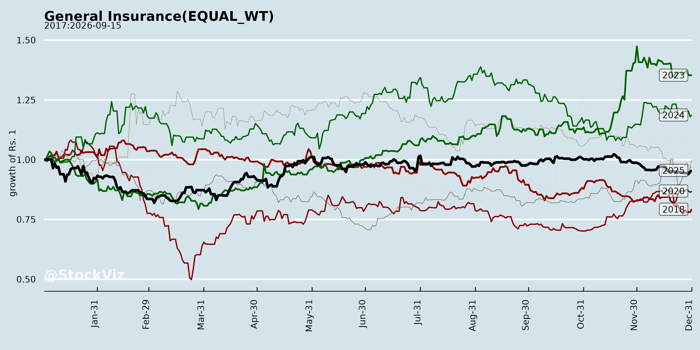
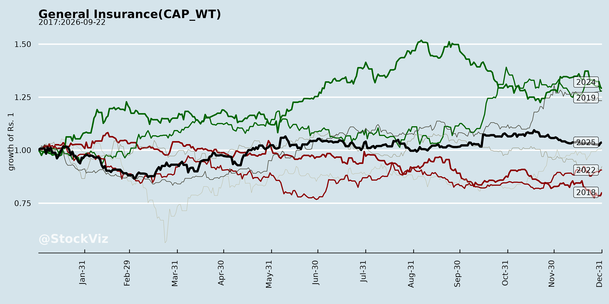
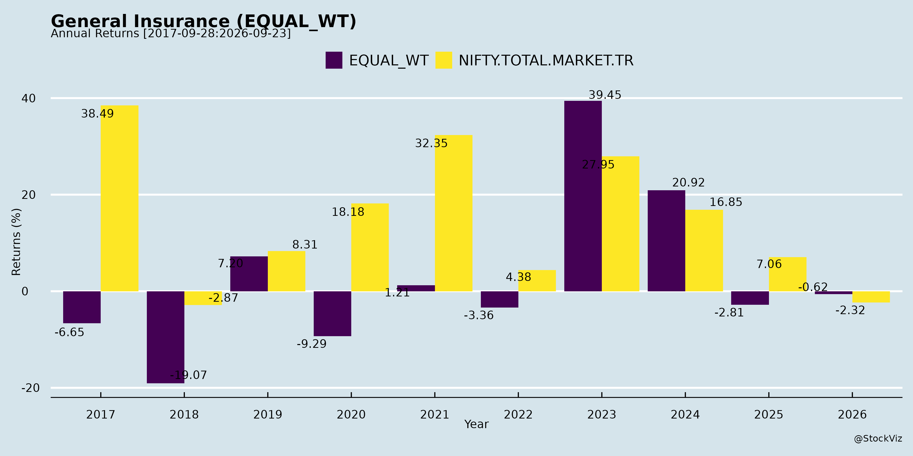
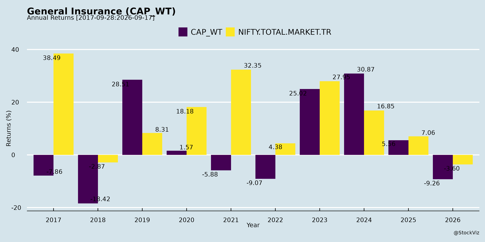
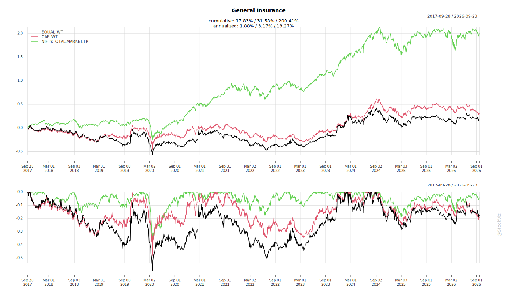
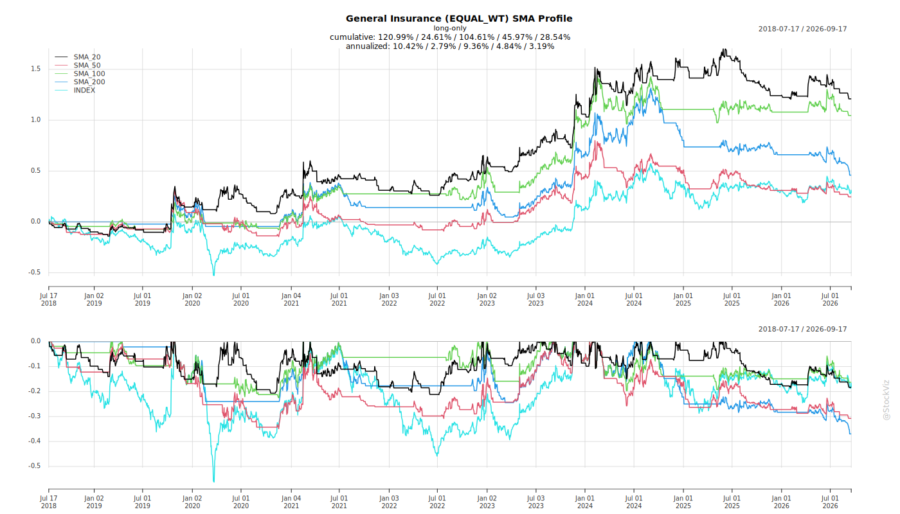
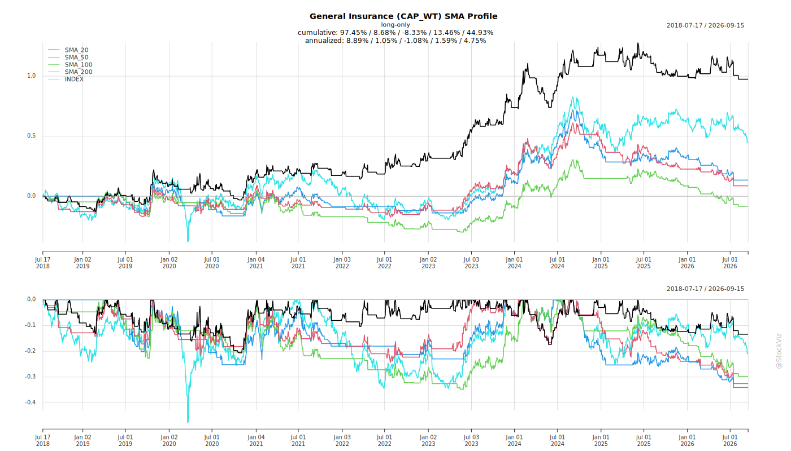

General Insurance
Industry Metrics
November 28, 2025
Annual Returns




Cumulative Returns and Drawdowns

SMA Scenarios


Current Distance from SMA
Rolling Returns


Market Cap
EBIT (% of Industry Total)
Revenue (% of Industry Total)
AI Summaries
Analyst
asof: 2025-11-27
Analysis of Indian General Insurance Sector (Based on Q2/H1 FY26 Earnings Transcripts)
The provided documents include earnings conference call transcripts and announcements from key players: GIC Re (reinsurer), ICICI Lombard, New India Assurance (NIACL), Go Digit, Niva Bupa, and Star Health (health-focused). These offer insights into sector performance for H1 FY26 (ended Sep 2025), amid GST reforms, economic tailwinds, and underwriting pressures. Industry GDPI grew ~7.3% YoY (10.5% ex-crop/mass health), but players like NIACL (12.9%), GIC Re domestic (4.6%), and ICICI Lombard retail health (25%) outperformed in segments.
Below is a structured analysis of headwinds, tailwinds, growth prospects, and key risks, followed by a summary.
Headwinds (Challenges Pressuring Margins/Performance)
- Elevated Underwriting Losses: Industry CoR worsened to 115% (Q1 FY26) from 113.9% YoY; private players flat at ~110.7%. Motor CoR at 125% due to pricing pressure and high TP claims. GIC Re: 109.15%; NIACL: 127.21% (impacted by wage provisions).
- CAT/Weather Events: Prolonged monsoons, floods (North India), and secondary perils drove claims (ICICI: Rs 73 cr CAT loss; NIACL: multiple small CATs fully net-retained; GIC Re refining models).
- Health Claims Inflation: Dengue/infectious diseases post-monsoon; reserve strengthening (GIC Re life: 114% ICR). Industry health ICR up slightly.
- One-Time Costs: NIACL’s Rs 1,680 cr wage revision arrears (Rs 1,118 cr to revenue). Operating expenses up (NIACL: 13.64%).
- GST Reforms Impact: Zero GST on individual health premiums erodes input tax credit (ICICI/New India: Rs 100 cr hit absorbed fully, not passed to agents; may raise acquisition costs).
- Motor Slowdown: Muted growth (industry 7.6%, ICICI 2.2%); skewed toward renewals/old vehicles with higher losses; no TP tariff hike yet.
- Reinsurance/Regulatory Uncertainty: Potential obligatory cession reductions (GIC Re confident of voluntary shift); international softening post-2023 hardening.
Tailwinds (Supportive Factors Driving Resilience)
- GST 2.0 Reforms: Zero GST on health (Sep 22, 2025) + auto GST cuts boost affordability/demand. Retail health uptick post-reform (ICICI Sep MS: 4%; Navratri auto sales +34-36%).
- Economic Momentum: GDP 7.8% (5Q high), repo cut (100 bps), tax incentives injecting Rs 2,200-3,100 bn stimulus. Sovereign rating upgrade after 18 years.
- Strong Investment Yields: Key offset to underwriting losses. GIC Re: Rs 3,792 cr (+9%); ICICI: Rs 25 bn (+13%); NIACL: mitigated wage hit.
- Rating/Financial Strength: GIC Re A- restoration (AM Best); NIACL B++ (Good), solvency 1.79x; ICICI 2.73x.
- Digital/Operational Efficiencies: ICICI’s IL TakeCare app (18.4 mn downloads, Rs 2 bn GWP); NIACL OCR/ICR, AI chatbots, fraud analytics; claims TAT improvements (ICICI motor OD: 96.4% <30 days).
- Product Innovation: NIACL parametric (Nishchit Suraksha), SME/pandemic BI covers; health focus (Star Health, Niva Bupa events signal penetration push).
Growth Prospects
- Short-Term (H2 FY26): Festive tailwinds + GST effects to drive motor (Sep auto +5-6.5%; ICICI Sep motor +6.5%) and retail health (ICICI 25% YoY, MS up to 3.7-4%). Ex-crop/mass health GDPI: 10.5%. Companies guide mirroring industry + market share gains (NIACL MS 13.25%; GIC Re domestic 78% split).
- Medium-Term (FY27+): Health penetration (GST zero as “biggest marketing stimulus”); fire/commercial robust (industry 14-20%, NIACL 21%). GIC Re targets 60:40 domestic:international. Parametric/MSME products for underserved (gig workers, SMEs ~90% uninsured).
- Overall: Industry to sustain 10-15% GDPI growth (ex-cyclicals); multiline players (ICICI, NIACL) best positioned. Retail health/group to shift (NIACL retail target 30-50%). International reinsurance leverage (GIC Re Jan ’26 renewals).
- Projections: ICICI PAT +23% YoY (Rs 15.7 bn); NIACL PAT +58%; GIC Re PAT +54%. ROE stable 18-21% (ICICI 20.8%).
Key Risks
| Risk Category | Details | Mitigants Mentioned |
|---|---|---|
| Underwriting | Persistent high CoR (motor/health); claims inflation/fraud. | Prudent risk selection, pricing corrections (health rates up 2Y), digital claims/fraud tools. |
| CAT/Climate | Rising secondary perils; extended monsoons. | CAT XOL enhancements (NIACL multi-year); exposure modeling (GIC Re). |
| Regulatory | IFRS17 (Apr ’27), RBC rollout; obligatory cessions end; 1/n accounting volatility. | Parallel runs; capital planning (solvency buffers). |
| Competition | Aggressive motor pricing; reinsurance softening (Jan ’26). | Portfolio rebalancing (ICICI: PC/TW/CV mix shift); ratings leverage. |
| Macro/Execution | ITC loss from GST; wage/escalation costs; distribution shifts. | Absorb via volumes/investments; office rationalization (NIACL). |
| Other | Credit life/mortality adverse (GIC Re); cyber/pandemic gaps. | Experience analysis, parametric triggers. |
Executive Summary
Bullish Outlook Amid Cyclical Pressures: Indian general insurance shows resilience (PAT growth 20-60% across players) despite H1 headwinds like CATs, high CoR (110-127%), and one-offs (wages/GST ITC ~Rs 100-200 cr hits). Tailwinds dominate: GST reforms turbocharge health/motor demand (retail health +25%, auto festive surge), strong investments (YTM ~7.4%), and digital efficiencies. Growth: 10-15% GDPI FY26+ (health/fire lead); market leaders gaining share (NIACL +1%, ICICI retail outpacing). Risks Manageable: Underwriting discipline + solvency buffers (1.8-3.85x) offset regulatory/climate uncertainties. Net Positive: H2 FY26 inflection likely (reforms + festive); sector poised for profitable expansion, with multiline/reinsurers best bets. ROE stable 18-21%; watch Jan ’26 reinsurance renewals and TP hikes.
Data as of Nov-Dec 2025 transcripts; sector GDPI ex-crop/mass health most indicative.
General
asof: 2025-11-27
Summary Analysis of Indian General Insurance Sector
Based on the provided regulatory filings, investor presentations, and disclosures from key players (GIC Re, Go Digit General Insurance, ICICI Lombard, Niva Bupa, and Star Health), the Indian general insurance sector exhibits resilience amid competitive pressures and regulatory evolution. The sector benefits from low penetration (0.7-0.9% of GDP vs. global 4%), a large TAM (~USD 715 Bn by 2025 per Swiss Re), and post-COVID health/motor demand. Private players (e.g., ICICI Lombard at ~5% market share) are gaining from PSUs, with focus on profitability (COR ~102-104%), digitalization (99% e-policies), and ESG integration. However, challenges like CAT losses, pricing wars, and regulatory shifts (e.g., 1/n reserving from Oct 2024) persist. Below is a structured analysis.
Tailwinds (Supportive Factors)
- Low Penetration & Large TAM: India ranks 15th globally (2nd in emerging Asia); non-life density at USD 30/capita (vs. global USD 789). Steady GDPI CAGR ~8-16% (FY08-25), driven by motor (50%+ mix), health, and P&C growth.
- Digital & Tech Adoption: 99%+ e-policy issuance (ICICI Lombard); apps (IL TakeCare: 18Mn downloads), AI for underwriting/claims (NPS 66-75). Enables retention (+3.6% YoY) and efficiency.
- Profitable Growth Focus: Leaders like ICICI Lombard maintain COR <103% (vs. industry 112-115%), ROAE 19-21%, PAT CAGR 20%+. Diversified portfolios (motor OD/TP, retail health +30% YoY).
- Investment Yields: Strong AUM growth (20% CAGR); unrealized gains ₹16Bn (H1FY26); leverage 3.5x.
- Regulatory Support: IRDAI approvals for overseas WOS (GIC Re UK subsidiary); ESG/BRSR mandates driving transparency (MSCI AAA for ICICI Lombard).
- ESG Momentum: Upgrades (Sustainalytics low risk); policies on human rights, DEI (29% women employees at Star Health).
Headwinds (Challenges)
- Competitive Intensity: Pricing pressure in motor (IL grew 17.8% vs. industry 5.8% in Sep’25); volume spikes (Go Digit clarification); private share ~54% but fragmented.
- Regulatory Changes: 1/n reserving impacts comparability (COR up ~1% for IL H1FY26); FEMA compliance for overseas investments.
- High Loss Ratios: Crop >88%, marine/engineering spikes; CAT losses (₹0.73Bn H1FY26 for IL); industry COR 115% H1FY26.
- Operational Scale: Typo corrections in disclosures (IL); ESOP allotments minor but signal growth dilution (Niva Bupa).
- Macro Pressures: Inflation, GST cuts aiding motor but offset by claims inflation.
Growth Prospects
- Double-Digit Industry Growth: GDPI +7-11% (n-basis H1FY26); private CAGR 6-7% (IL 8.3% FY25). Retail health +30% (IL), P&C +15%; motor rebound (Sep’25 +6.5%).
- Product Expansion: Balanced mix (motor 50%, health 20-25%); crop tenders won (IL); overseas services (GIC Re UK WOS with £1 capital).
- Distribution Diversification: Agents (50%+), brokers, banca; 1.7L agents (IL). MSME/rural push via CSR (Star Health: 30K beneficiaries).
- Capital Efficiency: Solvency 2.6-2.7x; ROAE 20%+; AUM CAGR 20%. Projections: IL PAT CAGR 20%+ to FY29.
- M&A/Innovation: ESOPs for talent (Niva Bupa); AI/risk models; green bonds/ESG products.
Key Risks
| Risk Category | Description | Mitigation (from Disclosures) |
|---|---|---|
| Underwriting/Claims | High COR (crop/marine >100%), CAT events (IL share < market avg., but ₹0.94Bn H1FY25). | Prudent reinsurance (A- rated), conservative reserving (MAD), run-off gains. |
| Regulatory/Compliance | IRDAI/FEMA approvals; LODR disclosures (volume movements, typos). Fines (Star Health: ₹0.15Cr GST/PF). | ESMS, quarterly reviews, ESG committees. |
| Cyber/Data Privacy | Material risk (Star Health BRSR); breaches (0.005% at Star Health). | ISO 27001, penetration testing, DPDPA compliance. |
| Climate/ESG | Transition/physical risks; low biodiversity impact but rising CATs. | TCFD gap analysis, CRA; Scope 1/2 emissions tracked (8Kt CO2e). |
| Operational/Talent | Attrition 38% (Star Health); harassment complaints (9 FY25). | DEI (22% women BoD), wellness (100% insurance cover), POSH training. |
| Market/Competition | Pricing wars, low ROE for PSUs/SAHI. | Leadership (IL 10.4% motor share), diversified channels. |
Overall Outlook: Positive with cautious optimism. Tailwinds from penetration/digitalization outweigh headwinds; growth ~10-15% CAGR feasible for leaders. Risks manageable via tech/ESG focus, but CAT/climate vigilance key. Sector poised for consolidation; private players like ICICI Lombard (PAT ₹25Bn FY25) lead profitability. Monitor Q3FY26 results for 1/n impact.
Investor
asof: 2025-11-27
Indian General Insurance Sector Analysis (Based on Q2/H1 FY26 Earnings Transcripts and Filings)
Executive Summary
The Indian general insurance sector demonstrated resilient growth in H1 FY26, with industry GDPI up 7.3% YoY (10.5% ex-crop/mass health), driven by fire (+20.5%), commercial (+14.2%), and retail health (+9.3%). Players like GIC Re (premium +14%), ICICI Lombard (GDPI +1.6% GWP), and New India Assurance (GWP +11.5%, market share to 13.25%) outperformed, aided by strong investment income. However, combined ratios deteriorated (industry ~115%, motor 125%), due to CAT losses, wage provisions, and pricing pressures. GST 2.0 reforms (zero GST on retail health, auto rate cuts) are major tailwinds, boosting affordability and demand. Outlook is optimistic for H2 FY26/FY27, with health/motor revival, but risks from claims inflation and regulation persist.
Tailwinds
- GST Reforms (Sep 2025): Zero GST on individual health premiums enhances affordability, spurring retail indemnity uptake (ICICI Lombard: +25.2% growth, market share to 3.7-4%). Auto GST cuts reduce ownership costs, fueling vehicle sales (PC +2.9-34.9% festive, 2W +0.5-36%) and motor premiums.
- Robust Investment Yields: Rising yields (GIC Re: ₹3,792 Cr; ICICI: ₹25 Bn H1) offset underwriting losses (New India PAT +58% despite provisions).
- Retail Health Momentum: Post-1/n norm moderation, strong growth (industry +9.3%; ICICI +25%). Digital tools (IL TakeCare app: 18.4 Mn downloads) aid penetration.
- Rating/Strategic Wins: GIC Re’s A- restoration aids international growth (target 40% mix). Digital transformation (OCR, AI chatbots at New India/ICICI) cuts costs/claims TAT.
- Macro Support: GDP +7.8%, sovereign upgrade, repo cut boost consumption.
Headwinds
- Deteriorating Underwriting: Industry CoR 115% (Q1 FY26), motor ICR ~125% due to pricing pressure, high TP claims, CAT floods (ICICI/New India). GIC Re life CoR 114% (reserve strengthening); New India 127% (₹1,680 Cr wage provision).
- CAT/Weather Events: Prolonged monsoons, floods hit fire/property (New India: multiple North India events absorbed net).
- Accounting/Regulatory Shifts: 1/n norm distorts long-term growth comparability (ICICI GDPI -0.5%). Wage arrears inflate opex (New India expense ratio +2%).
- Competition: Softening in motor/commercial leads to share loss (ICICI motor +2.2% vs industry 7.6%). Obligatory cessions phase-out risks GIC Re domestic book (78% mix).
- Segment Pressures: Health claims up (dengue, post-monsoon diseases); crop/mass health drag GDPI.
Growth Prospects
- H2 FY26/FY27 Acceleration: Festive tailwinds + GST to drive motor (ICICI Sep +6.5%; industry Navratri PC/2W +35%). Health to scale (New India retail target 30-50%; parametric products for SMEs/gigs).
- Segment Opportunities: | Segment | Growth (H1 FY26) | Outlook | |—————|——————|———| | Fire/Commercial | +14-20% | Leadership retained (New India 16.4%, ICICI fire +27% Sep); measured reinsurance growth (GIC Re). | | Retail Health | +9-25% | GST zero + indemnity revival; ICICI NPS 72. | | Motor | +7.6% | Volume-led (FADA data); new vehicle edge for multiline players. | | International | GIC Re +9.4% | Jan ’26 renewals leverage ratings. |
- Overall: Industry mirrors 10-15% GDPI growth; multiline firms (ICICI/New India) target profitable scaling (CoR <105% ex-CAT). Digital/new products (New India Nishchit Suraksha parametric, BI-pandemic cover) tap MSME/informal gaps.
- IFRS17/RBC (FY27): Parallel run FY26; expected CoR improvement via investment credit.
Key Risks
- Claims Inflation/CAT: Climate perils, mortality (GIC Re life), fraud (health/motor); unhedged sporadic events (New India net absorption).
- Pricing Discipline: Motor TP hike awaited; health softening risks reserve releases.
- Regulatory: Obligatory cession cuts (GIC Re); IFRS17/RBC volatility (solvency strain possible); GST ITC loss (~₹100 Cr hit for New India).
- Competition/Portfolio Mix: Share erosion in motor (ICICI -0.5%); reinsurance retention shifts.
- Macro/Operational: Investment volatility (mark-to-market); wage/opex sustainability; talent for crop/MSME scaling.
- Solvency/Capital: Comfortable (GIC Re 3.85x, ICICI 2.73x, New India 1.79x) but RBC may tighten.
Net Outlook: Positive with reforms offsetting underwriting stress. Focus on profitable growth (target CoR 100-105% ex-CAT) positions leaders for 12-15% CAGR through FY27, led by health/motor revival and digital efficiency. Monitor H2 CAT/TP tariff developments.
Copyright © 2023 SAS Data Analytics Pvt. Ltd. All rights reserved.